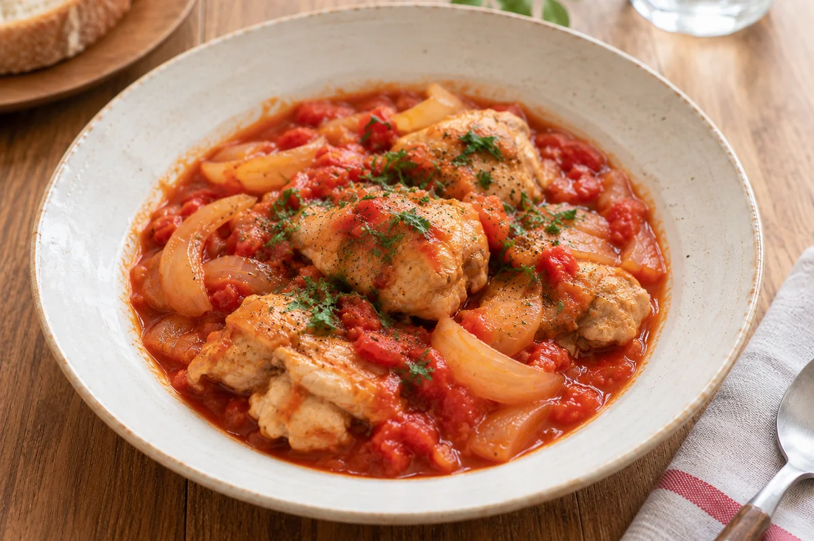

フライパンひとつで簡単！
鶏肉のトマト煮
ほどよい酸味と鶏肉のうま味がなじむ、平日の晩ごはんに使いやすい一皿。材料を順番に入れて煮込むだけなので、忙しい日にも作りやすいレシピです。

鶏肉に焼き色をつけてから煮込むと、香ばしさが加わります。トマトの酸味が気になるときは、仕上げに砂糖をほんの少し加えるのがコツです。
材料
2〜3人分- 鶏もも肉
- 1枚（約300g）
- 玉ねぎ
- 1/2個
- カットトマト
- 200g
- コンソメ
- 小さじ1
- オリーブオイル
- 小さじ2
- 塩・こしょう
- 少々
作り方
全4工程- 1下ごしらえをする
鶏肉を食べやすい大きさに切り、玉ねぎを薄切りにします。
- 2鶏肉を焼く
フライパンにオリーブオイルを入れ、鶏肉の表面に焼き色をつけます。
鶏肉のトマト煮｜作り方の続き
- 3トマトと一緒に煮込む
玉ねぎとトマトを加え、弱めの中火で10〜15分ほど煮込みます。
ときどき底からやさしく混ぜ、焦げつかないようにします。水分が少なくなったら、水を少しずつ足してください。
鶏肉の中心まで十分に火が通ったら、仕上げの味つけに進みます。
- 4味を整える
コンソメ、塩、こしょうで味を整えたら完成です。
器に盛りつけ、お好みでパセリを散らします。パンにもごはんにも合う一皿です。
料理と暮らしの読みもの
煮込み料理をおいしく仕上げる3つのコツ
ちょっとした火加減と水分調整で、いつもの煮込み料理がぐっと作りやすくなります。
肉や野菜を軽く焼いてから煮込むと、味に奥行きが出ます。
煮詰まりすぎたら少量の水を足し、ゆるいときはふたを外して調整します。
塩味や酸味は煮込み終わりに確認すると、調整しやすくなります。
少しずつ、自分の台所に合ったやり方を見つけてみてください。続きでは、仕上げのひと工夫をご紹介します。
毎日の料理に、ひと工夫
一度に全部を変える必要はありません。まずは、今日の料理で試しやすいことから取り入れてみましょう。
料理の基本
味つけの基本｜少しずつ、最後に整える
煮込み料理は、火にかけている間に水分が減って味が変わります。仕上げに一度味をみて、塩やこしょうを少しずつ加えると調整しやすくなります。
ひと口みたら、よく混ぜてからもう一度。急いで調味料を加えすぎないことが、いつもの味に近づける小さなコツです。
次は、別のWebサイトを見てみましょう。
広告の見た目が変わっても、落ち着いて操作できるか試します。
週末のおでかけ記事を見る台所の小さな読みもの
献立のヒント
主菜を決めたら、冷蔵庫の野菜で小さな副菜を一品。トマト煮の日は、葉もののサラダや温野菜を添えると準備をまとめやすくなります。
台所の道具
使う頻度の高い道具は、取り出しやすい場所へ。調理台に置くものを少し減らすだけでも、下ごしらえのスペースが作れます。
暮らしの工夫
夕食の準備を始める前に、今日使う材料と器を出しておきます。片づけも一度に済ませようとせず、料理の合間に少しずつ進めましょう。